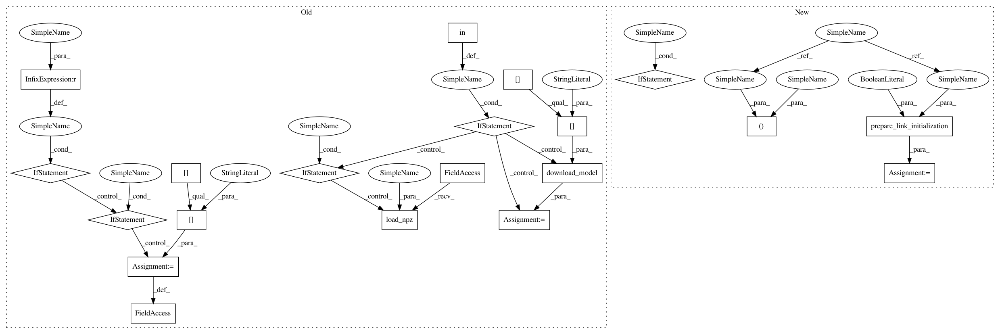

76b060f625e037d479a2eb25462a3b3f70af5bb7,chainercv/links/model/resnet/resnet.py,ResNet,__init__,#ResNet#Any#Any#Any#Any#Any#Any#Any#,148
Before Change
_models = self._models[arch][n_layer]
blocks = self._blocks[n_layer]
if n_class is None:
if pretrained_model in _models:
n_class = _models[pretrained_model]["n_class"]
else:
n_class = 1000
if mean is None:
if pretrained_model in _models:
mean = _models[pretrained_model]["mean"]
else:
mean = _imagenet_mean
self.mean = mean
if initialW is None:
initialW = initializers.HeNormal(scale=1., fan_option="fan_out")
if "initialW" not in fc_kwargs:
fc_kwargs["initialW"] = initializers.Normal(scale=0.01)
if pretrained_model:
// As a sampling process is time-consuming,
// we employ a zero initializer for faster computation.
initialW = initializers.constant.Zero()
fc_kwargs["initialW"] = initializers.constant.Zero()
kwargs = {"initialW": initialW, "stride_first": stride_first}
super(ResNet, self).__init__()
with self.init_scope():
self.conv1 = Conv2DBNActiv(None, 64, 7, 2, 3, nobias=conv1_no_bias,
initialW=initialW)
self.pool1 = lambda x: F.max_pooling_2d(x, ksize=3, stride=2)
self.res2 = ResBlock(blocks[0], None, 64, 256, 1, **kwargs)
self.res3 = ResBlock(blocks[1], None, 128, 512, 2, **kwargs)
self.res4 = ResBlock(blocks[2], None, 256, 1024, 2, **kwargs)
self.res5 = ResBlock(blocks[3], None, 512, 2048, 2, **kwargs)
self.pool5 = _global_average_pooling_2d
self.fc6 = L.Linear(None, n_class, **fc_kwargs)
self.prob = F.softmax
if pretrained_model in _models:
if not _available:
warnings.warn("cv2 is not installed on your environment. "
"The scores of ResNets reported in the "
"README of the ChainerCV\"s classification "
"example are calculated using OpenCV as the "
"backend. With Pillow as the "
"backend, the scores would change.",
RuntimeWarning)
path = download_model(_models[pretrained_model]["url"])
chainer.serializers.load_npz(path, self)
elif pretrained_model:
chainer.serializers.load_npz(pretrained_model, self)
def _global_average_pooling_2d(x):
n, channel, rows, cols = x.data.shape
h = F.average_pooling_2d(x, (rows, cols), stride=1)
h = h.reshape((n, channel))
After Change
_models = self._models[arch][n_layer]
blocks = self._blocks[n_layer]
n_class, path = prepare_link_initialization(
n_class, pretrained_model, _models, False, 1000)
if mean is None:
if pretrained_model in _models:
mean = _models[pretrained_model]["mean"]
else:
mean = _imagenet_mean
self.mean = mean
if initialW is None:
initialW = initializers.HeNormal(scale=1., fan_option="fan_out")
if "initialW" not in fc_kwargs:
fc_kwargs["initialW"] = initializers.Normal(scale=0.01)
if pretrained_model:
// As a sampling process is time-consuming,
// we employ a zero initializer for faster computation.
initialW = initializers.constant.Zero()
fc_kwargs["initialW"] = initializers.constant.Zero()
kwargs = {"initialW": initialW, "stride_first": stride_first}
super(ResNet, self).__init__()
with self.init_scope():
self.conv1 = Conv2DBNActiv(None, 64, 7, 2, 3, nobias=conv1_no_bias,
initialW=initialW)
self.pool1 = lambda x: F.max_pooling_2d(x, ksize=3, stride=2)
self.res2 = ResBlock(blocks[0], None, 64, 256, 1, **kwargs)
self.res3 = ResBlock(blocks[1], None, 128, 512, 2, **kwargs)
self.res4 = ResBlock(blocks[2], None, 256, 1024, 2, **kwargs)
self.res5 = ResBlock(blocks[3], None, 512, 2048, 2, **kwargs)
self.pool5 = _global_average_pooling_2d
self.fc6 = L.Linear(None, n_class, **fc_kwargs)
self.prob = F.softmax
if path:
chainer.serializers.load_npz(path, self)
def _global_average_pooling_2d(x):
n, channel, rows, cols = x.data.shape
h = F.average_pooling_2d(x, (rows, cols), stride=1)
h = h.reshape((n, channel))
In pattern: SUPERPATTERN
Frequency: 3
Non-data size: 20
Instances
Project Name: chainer/chainercv
Commit Name: 76b060f625e037d479a2eb25462a3b3f70af5bb7
Time: 2018-05-01
Author: yuyuniitani@gmail.com
File Name: chainercv/links/model/resnet/resnet.py
Class Name: ResNet
Method Name: __init__
Project Name: chainer/chainercv
Commit Name: 76b060f625e037d479a2eb25462a3b3f70af5bb7
Time: 2018-05-01
Author: yuyuniitani@gmail.com
File Name: chainercv/links/model/vgg/vgg16.py
Class Name: VGG16
Method Name: __init__
Project Name: chainer/chainercv
Commit Name: 76b060f625e037d479a2eb25462a3b3f70af5bb7
Time: 2018-05-01
Author: yuyuniitani@gmail.com
File Name: chainercv/links/model/segnet/segnet_basic.py
Class Name: SegNetBasic
Method Name: __init__